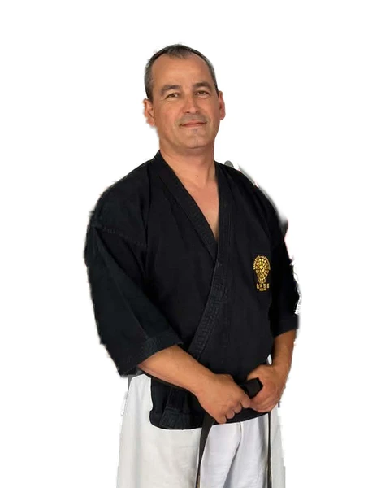
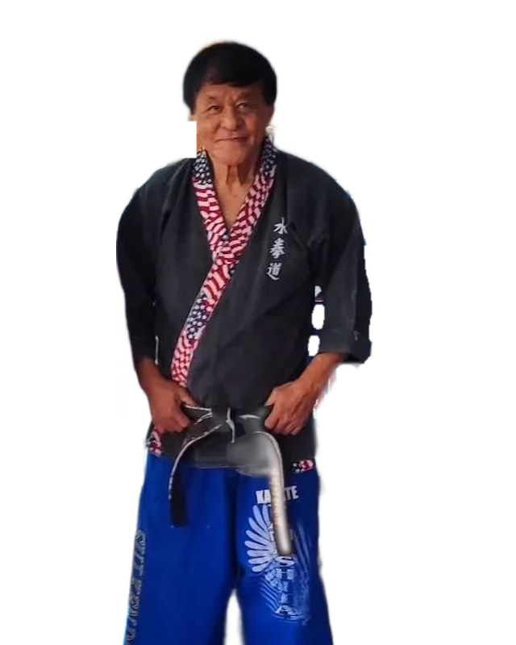
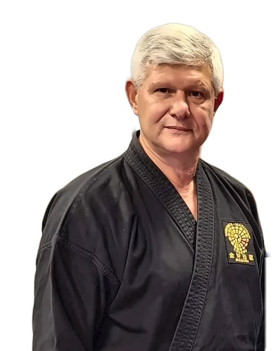
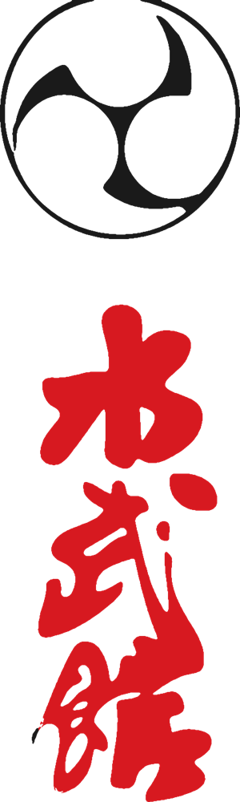
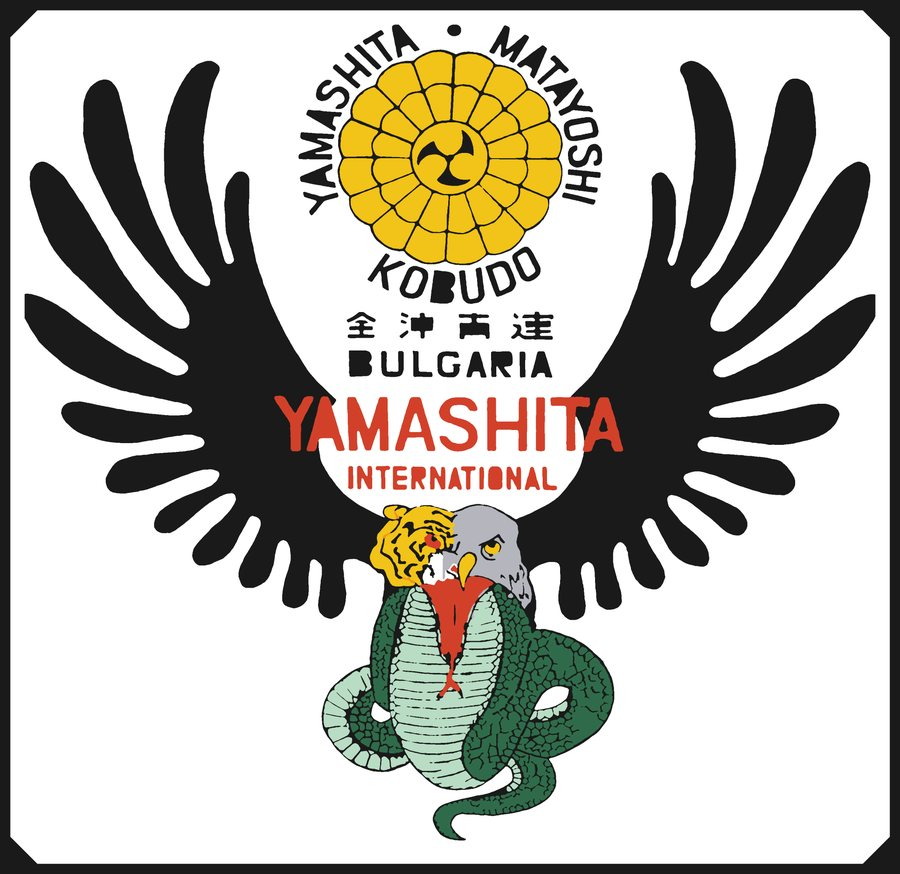

小林流
Ямашита Шорин Рю Карате
Окинавско карате: основна техника, ката и кумите. Изгражда сила, бързина, координация и характер.
Пловдив · Карлово
Ямашита Шорин Рю Карате · Ямашита Матайоши Кобудо · Суйкендо
Традиционно окинавско карате и бойни изкуства с оръжия.
Какво тренираме
Учим по линията на майстор Тадаши Ямашита, при сенсей Румен Димитров.
Окинавско карате: основна техника, ката и кумите. Изгражда сила, бързина, координация и характер.
Традиционните окинавски оръжия: бо, сай, тонфа, нунчаку и други. За напредналите в карате и за възрастни.
Системата, която майстор Тадаши Ямашита е създал сам, „пътят на водния юмрук“. Развива сила, гъвкавост, баланс и бойна бдителност.
Зали и часове
ОУ „Алеко Константинов“
Вторник и четвъртъкОУ „Св. св. Кирил и Методий“
Понеделник и срядаБиография
Треньор • Състезател • Майстор по бойни изкуства
Председател и главен инструктор на Академия за бойни изкуства „Хемус 2003“, с над 20 години професионален опит в спорта, олимпийското таекуондо и традиционните бойни системи. Днес тренира и преподава само Ямашита Шорин Рю Карате, Ямашита Матайоши Кобудо и Суйкендо. Сам продължава да тренира при сенсей Левон Пакосян, 8 дан, президент на Суйбукан Академия Пловдив.
Степени в други бойни изкуства (в миналото)

Румен Георгиев Димитров е роден на 30 юни 1980 г. в Горна Оряховица и израства в Лясковец. През 2002 г. завършва Националната спортна академия „Васил Левски“ в София със специалност „Треньор и учител по физическо възпитание и спорт“.
Първите си стъпки прави в танг су до в Лясковец, при първия си треньор Даниел Йотов, към Българската асоциация по танг су до с президент Роберт Харитонов. След това за кратко тренира ITF таекуондо в Горна Оряховица при Кирил Палев, а в Националната спортна академия започва олимпийско таекуондо при майстор Ким Хо. Така започва път от над 20 години в таекуондо WT, като състезател и като треньор, в който достига 5 дан.
Паралелно практикува хапкидо, където има 4 дан. Няколко години работи с майстор Джанг Хи Чанг и води един от първите клубове по хапкидо в България. През годините участва в международни семинари, съдийски и треньорски обучения и тренировъчни лагери. Сред майсторите, с които е свързан пътят му, са Ханши Тадаши Ямашита, 10 дан, майстор Ким, 10 дан, GM Ik Pil Kang, GM Jang Hee Chang, GM Ки Ту Данг, майстор Сим Пан и сенсей Левон Пакосян. Като наблюдател преминава и международен съдийски семинар в Сърбия.
Работил е и като служител на реда, включително в регионалното специализирано звено за бързи действия във Велико Търново. Там преминава обучение по тактика, стрелба и специални операции и се занимава с полицейска лична защита.
Преподавал е бойни изкуства във Великотърновска област, а днес преподава в Пловдивска област. Дълги години работи по програми на Министерството на образованието и науката и Министерството на младежта и спорта за популяризиране на спорта и физическата активност сред подрастващите. Печели проект, благодарение на който в зала „Никола Петров“ в Горна Оряховица е изградена мултифункционална специализирана зала за таекуондо.
Освен в спорта, Румен Димитров дълги години работи в областта на самозащитата – като бивш служител на реда и като инструктор. Семинарите му събират на едно място треньори, полицаи и военни.
През 2003 г. поставя началото на школата по таекуондо „Хемус“ в Горна Оряховица, която се утвърждава с участия и отличия в национални и международни състезания. Днес е председател и главен инструктор на Академия за бойни изкуства „Хемус 2003“ с дейност в Пловдив и Карлово. Особено място в нея заема окинавското оръжейно изкуство кобудо – работа с бо, тонфа, сай и нунчаку.
За него бойните изкуства не са просто спорт, а път на самоусъвършенстване, изграждане на характер и духовно развитие. В работата си поставя акцент върху дисциплината, уважението, постоянството, отговорността и самоконтрола. Вярва, че истинският успех не се измерва само с медали и степени, а с личностното израстване и способността да преодоляваш собствените си ограничения. Мисията му е да съхранява традициите на бойните изкуства, да предава опита си на следващите поколения и да изгражда не само добри спортисти, но и достойни личности.
„Бойният път не е само път към победата над противника, а преди всичко път към победата над самия себе си.“
— Румен Георгиев Димитров
Има дългогодишна състезателна кариера в олимпийското таекуондо WT, със специализация в пумсе (технически форми). Представя България на държавни, балкански, международни, европейски и световни първенства и на турнири от клас А и G – в Белград, Родос, Португалия, Инсбрук, Германия, Сърбия, Черна гора, Турция и други държави.
След дипломирането си, през 2003 г., основава своя клуб в Горна Оряховица. Още в началото се утвърждава като треньор по олимпийско таекуондо WT и подготвя състезатели в спаринг (кьоруги). Негови възпитаници представят България на европейски първенства за кадети:
По-късно разширява работата си към пумсе и подготвя състезатели за национални, европейски и световни първенства. Негова възпитаничка е Милица Петрова – 3-то място на Европейското първенство по пумсе през 2017 г. и 2-ро място на Световното плажно първенство в Родос през 2018 г., отборно и индивидуално.
През 2016 г. участва в работата на Пумсе комисията към Българската федерация по таекуондо и има принос към организирането на национални квалификации и развитието на пумсе в България. През 2022 г. участва в подготовката и ръководството на българската делегация за Световното първенство в Гоянг – заедно с Бисер Христов работи с националния състав и същевременно се състезава. През 2023 г. е част от ръководството на делегацията за Европейското първенство в Инсбрук, където участва и индивидуално.
Работил е още с GM Ik Pil Kang и с много други майстори по време на лагери и обучения в България и в чужбина.
Днес е носител на 5 дан по таекуондо WT – най-високата степен в клуба.
Таекуондо и хапкидо са част от пътя му в миналото. Днес той е отдаден изцяло на окинавските бойни изкуства по линията на майстор Ямашита и предава на учениците си опита от повече от три десетилетия в бойните изкуства.
От 2013 г. развива хапкидо – корейското изкуство за самозащита – в Горна Оряховица, под ръководството на гранд майстор Джанг Хи Чанг, 7 дан, президент на World Hapkido Kumdo Federation (WHKF). Клубът му е официален член на WHKF и един от първите в България с тренировки по хапкидо.
Пътят му в окинавските бойни изкуства минава през семинари с ханши Тадаши Ямашита, 10 дан, и дългогодишна работа със сенсей Левон Пакосян – председател на Ямашита Будо Организация България и Академия Суйбукан в Пловдив.
Повече от две десетилетия Румен Димитров съчетава три линии в бойните изкуства: олимпийско таекуондо WT – 5 дан, състезател и треньор на национално и световно ниво; хапкидо – 4 дан, представител на WHKF за България и един от първите, които го развиват у нас; и окинавските изкуства на майстор Ямашита – 4 дан карате и 4 дан кобудо. Общото между тях е самозащитата и предаването на традиционните знания – от първите семинари с корейски майстори в Горна Оряховица до днешната работа на Академия „Хемус 2003“ в Пловдив и Карлово.
Източници от пресата: Янтра ДНЕС – представител на WHKF · Янтра ДНЕС – хапкидо в България · Янтра ДНЕС – семинар в Румъния · Борба – 7-и семинар по хапкидо · RegNews – 8-и семинар по хапкидо · RegNews – семинар с Пакосян · RegNews – семинар с Ямашита · Община Карлово – самозащита за жени · Янтра ДНЕС – Световно по пумсе в Бали · Янтра ДНЕС – онлайн Европейско · RegNews – Ramus Sofia Cup · RegNews – Йордан Добрев, Чунчон 2026 · Борба – семинар в Троян · Янтра ДНЕС – Хемус, Ким Хо и държавното 2013 · Hemus – Taekwondo Peace Corps 2016 · Борба – черни колани 2016 · Борба – Мултиевропейско 2021 · БФТ – Европейско Родос 2017 · Борба – 6-и семинар по хапкидо · RegNews – Светла Александрова 3 дан · Община Горна Оряховица – награда за принос в спорта · RegNews – „Награда Горна Оряховица“ 2018 · RegNews – демонстрация 2018 · Борба – Празник на източноазиатските култури 2023 · Север.бг – интервю
Нашата линия

Роден е през 1942 г. в Япония, но израства в Окинава. Получава черен колан на 16 години и е ученик на сенсей Накадзато. Създател е на Суйкендо, „пътя на водния юмрук“. Основател и президент е на Yamashita International Budo Association, която обединява Ямашита Шорин Рю Карате, Ямашита Матайоши Кобудо и Суйкендо. Познат е и от холивудски филми като „Октагон“, „Американски нинджа“ и „Изгряващо слънце“. Неколкократно е гостувал в Пловдив.

Кьоши, 8 дан по Ямашита Шорин Рю Карате и 7 дан по Ямашита Матайоши Кобудо. Основател и президент на Ямашита Будо Организация България и на Академия за бойни изкуства Суйбукан (水武館) в Пловдив. Главен представител за България на Yamashita International Budo Association и на американските асоциации по Шорин Рю Карате и Зен Окинава Кобудо. Сенсей Румен Димитров тренира при него.
Получава първия си черен колан през 1991 г. и същата година открива доджо в родния си град. През 1995 г. защитава 3 дан по Окинава Те Тай и Сейдокан Мотобу Рю Карате. От 1989 до 2001 г. се състезава на национални, международни и световни турнири по карате (ката и кумите) и джу джицу и печели много призови места. През 1994 г. изучава индийското бойно изкуство каларипаят в Керала, Индия, а през 1999 г. практикува чи гун и вътрешни бойни изкуства в Китай. След 2000 г. тренира под ръководството на ханши Тадаши Ямашита. Учил е карате-до в НСА „Васил Левски“. Организира международния семинар по карате и суйкендо на Суйбукан Академия в Пловдив с участието на майстор Ямашита.
Други степени: Суйкендо, 4 дан Окинава Те Тай Карате, 3 дан Сейдокан Мотобу Рю, 2 дан джу джицу.

Родословие
Изкуствата, които преподаваме, идват от Окинава и се предават от учител на ученик вече повече от два века.
Корените на стила са в Шури-те, бойното изкуство на старата столица на Окинава. Традицията минава през майсторите Сакугава, Мацумура Сокон и Итосу Анко.
Най-верният ученик на Итосу, Чибана Чошин (1885–1969), дава на стила си името Шорин Рю през 1933 г. През 1956 г. основава Окинавската асоциация по Шорин Рю карате и става неин пръв президент. На Запад стилът често се нарича Кобаяши Рю, защото йероглифите 小林 се четат и така.
Ученикът на Чибана, Накадзато Шугоро (1920–2016), основава клона Шоринкан и получава 10 дан през 1980 г. Основните ката на стила са Найханчи, Пасай, Чинто и Годжушихо.
Матайоши Шинко (1888–1947) произлиза от стар окинавски род. Един от предците му е бил инструктор в двора на кралство Рюкю. През 1915 г. той демонстрира изкуството си в Токио пред императора на Япония.
Синът му Матайоши Шинпо (1921–1997) основава доджото Кодокан в Наха в памет на баща си. През 1970 г. създава Федерацията по кобудо на Рюкю, която през 1972 г. става Zen Okinawa Kobudo Renmei (全沖縄古武道連盟, Всеокинавска федерация по кобудо). Йероглифите 全沖古連 на нашата емблема са съкращение на това име.
Стилът включва оръжия като бо (тояга), сай, тонфа, нунчаку, сансецукон, кама (сърп), еку (гребло) и суручин. Според традицията златната хризантема в емблемата е знак на почит от императора, а трите запетаи (мицудомое) са символ на Окинава.
Суйкендо (水拳道), „пътят на водния юмрук“, е собствената система на майстор Ямашита. В нея движението тече непрекъснато, а блокът и ударът се изпълняват едновременно, с акцент върху скоростта и точността.
Предстоящо събитие
Води го сенсей Левон Пакосян, 8 дан по Ямашита Шорин Рю Карате. Ще има практически техники за реални ситуации и работа върху контрола и реакцията.
Снимки и видео
Видеата от тренировки, изпити и семинари идват скоро.
Нашите корени
